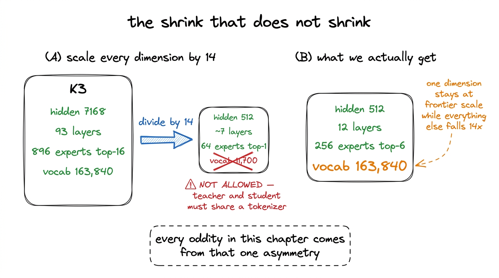
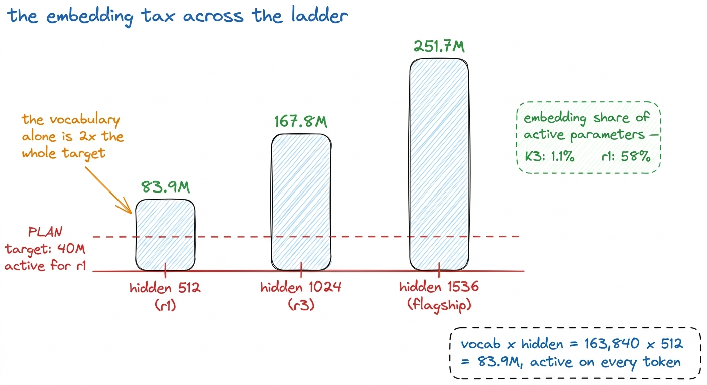
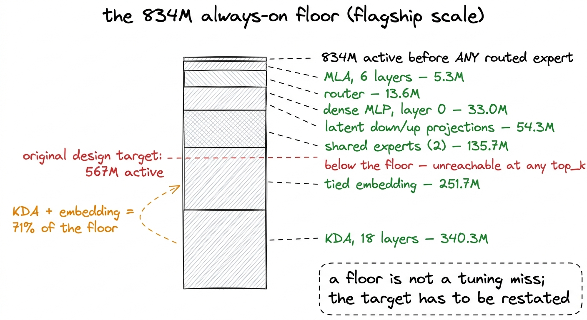
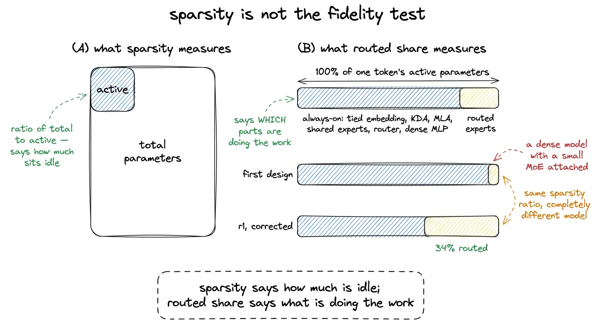
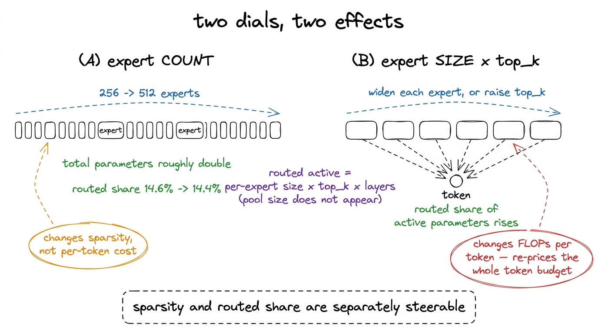
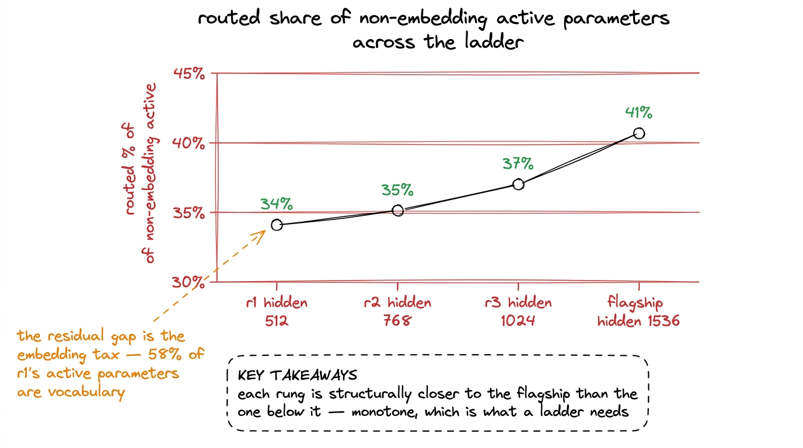

Scaling it down without lying about it
Why a '40M active parameter' model is arithmetically impossible with a 163,840-token vocabulary, what the 834M always-on floor taught us, and how r1's 1.02B total / 145M active was actually chosen.
Kimi K3 has 93 layers, a hidden size of 7,168, and 896 experts of which 16 fire for any given token. r1 has 12 layers, a hidden size of 512, and 256 experts of which 6 fire. Getting from the first set of numbers to the second looks like a division problem: pick a shrink factor, apply it to every dimension, keep the ratios, and call the result a small K3.
That procedure produces a model. It does not produce a small K3, and the arithmetic that shows why is the subject of this chapter. Two corrections were made along the way, one at the flagship's scale and one at the ladder's, and both were forced by a parameter counter rather than by an argument. Note that r1 is the rung that finished: it trained on one H200 and was never sharded. The flagship, where the first of the two corrections was made, was launched on 6 August 2026 and failed at step 890 of 76,294 with 69.5% dead experts, so everything said about it below is a design measurement rather than a result from a completed run.
What the naive shrink does
K3's hidden size is 7,168 and r1's is 512, so the shrink factor is 14. Applying it to depth gives 93 / 14 = 6.6 layers, and applying it to the expert pool gives 64 experts with top-1 routing. Applying it to the vocabulary would give about 11,700 tokens.
That last step is the one that cannot be taken. We keep K3's tokenizer unchanged, all 163,840 tokens of it, because the eventual reasoning-distillation stage operates at the token level and requires teacher and student to share a vocabulary. A retrained 12,000-token tokenizer would make the small model cheaper and would also make it a different model that cannot be compared with the one it is replicating.
So one dimension of the architecture is pinned at full size while every other dimension shrinks by a factor of fourteen. Everything unusual about the arithmetic below follows from that single asymmetry.1 The pinned vocabulary reaches further down the stack than the parameter count. Our token shards are raw little-endian uint32 with no header, and the width is uint32 rather than uint16 precisely because the vocabulary is 163,840: a 16-bit token id would silently truncate every id above 65,535, which is most of K3's vocabulary. Document boundaries are marked by the EOS id 163585.

figure rendering · Scaling every dimension by the same factor is not available to us, becThe embedding tax
A tied embedding costs vocab x hidden parameters, and it is active for every token: the input lookup and the output projection are the same matrix, and both run on every forward pass. At r1's width that is 163,840 x 512 = 83.9M parameters.
r1 has 145M active parameters in total. The embedding is 83.9M of them, which is 58%. In K3, measured on K3's own configuration by the same counter, embeddings are 1.1% of active parameters.2 Our parameter counter is validated against K3 itself before it is used on anything smaller: run on the released config it reports 2,779.5B total and 105.4B active against Moonshot's published 2.8T and 104B, and reproduces the 1.1% embedding share exactly. The chapter on counting the parameters covers the counter and the control in full. A counter that gets K3 right can be believed about the mini.
The same cost lands on every rung of the ladder, and it lands in absolute terms rather than proportional ones:
| hidden | tied embedding |
|---|---|
| 512 (r1) | 83.9M |
| 1024 (r3) | 167.8M |
| 1536 (flagship) | 251.7M |
The plan asked for a ladder at roughly 40M, 110M and 300M active parameters. At hidden 512 the embedding alone is 83.9M, which is more than twice the first target. There is no configuration of layers, heads and experts that reaches 40M active parameters while carrying a 163,840-token vocabulary, because the vocabulary is already double the budget before a single layer exists. The target was not missed. It was infeasible.

figure rendering · What K3's tokenizer costs on each rung. The cost scales with vocabularSizing the ladder on non-embedding parameters
The fix is not to shrink the vocabulary. It is to stop measuring the rungs in a unit that the vocabulary contaminates.
The ladder is therefore defined on non-embedding active parameters. r1's figure is 145M - 83.9M = 61M. r2 is 176M and r3 is 395M against 307M and 562M of total active parameters respectively. Both numbers are reported for every rung, so nothing is hidden by the choice of unit.
This is not a convenience we invented. Kaplan et al. and Chinchilla both fit their scaling laws on non-embedding parameters, and they do it for the same reason we do: embedding cost scales with the tokenizer, which is a decision about text encoding, while the rest of the parameter count scales with the model's capacity to compute.3 The distinction has teeth in exactly the regime we are in. At K3's width the choice changes the parameter count by 1.1% and can be ignored. At r1's width it changes it by 58% and decides which of two models looks bigger. A scaling fit that included embeddings would be measuring the constant cost of a frontier tokenizer and calling it capacity.
Measured non-embedding active comes out at 61M / 176M / 395M across r1, r2 and r3, against a plan that had asked for a 40M rung at the bottom. The smallest rung therefore lands above its stated target, and the three rungs span a factor of 6.5 in non-embedding parameters. We preferred structural fidelity to the flagship over hitting round numbers, and that range is wide enough to fit a trend against.
The floor underneath the flagship
The embedding problem at r1's scale is one rung down from a larger version of the same finding, which was made first, on the flagship.
The flagship's original design target was 567M active parameters. Measured on the released modeling code instantiated on PyTorch's meta device, the configuration that was supposed to produce that figure came out well above it. The gap is not a tuning miss. It is a floor.
Every K3 layer runs a set of components for every token before any routing decision is made. Adding them up at the flagship's width of 1,536 gives 834M parameters that are always on:
| always-on component | parameters | share of the floor |
|---|---|---|
| KDA (18 layers) | 340.3M | 40.8% |
| tied embedding | 251.7M | 30.2% |
| shared experts (2) | 135.7M | 16.3% |
| latent down/up projections | 54.3M | 6.5% |
| dense MLP (layer 0) | 33.0M | 4.0% |
| router | 13.6M | 1.6% |
| MLA (6 layers) | 5.3M | 0.6% |
| total | 834M |
834M is a hard lower bound. Top-1 routing to infinitely small experts would still cost 834M active parameters per token, because none of the rows above are routed. A target of 567M active was therefore unreachable under the approved architecture, and the correct response was to restate the target rather than to search for a configuration that meets it.
Two of the rows deserve a note, because they are the ones a shrink factor handles badly. KDA is the largest single item at 340.3M, and it is large because K3 puts a linear-attention layer everywhere it does not put a full-attention one: 69 KDA layers against 24 MLA layers in the released model, full attention on every fourth layer. Preserving that ratio at 24 layers gives 18 KDA layers and 6 MLA layers, and KDA's per-layer cost does not fall as fast as the layer count does. The tied embedding is the second largest at 251.7M, which is the same tax the ladder pays, arriving one scale up. Together those two rows are 71% of the floor, and neither of them is routed.

figure rendering · Everything that runs for every token at flagship scale. Measured by inThe fidelity test that mattered
The floor was the arithmetic problem. The second correction was a fidelity problem, and it is the one that would have invalidated the project without producing any visible symptom.
The design that sat above the floor had a defensible-sounding justification behind it: a small top_k out of a large pool preserves K3's total-to-active ratio, so the model is as sparse as K3 is. That claim is true, and it measures the wrong thing.
Sparsity is the ratio of total parameters to active parameters. It says how much of the model sits idle. It says nothing about which parts of the model are the active ones. The quantity that answers that question is the routed share of active parameters: of everything that fires for a token, how much of it is a routed expert rather than a component that fires for every token regardless.
Under the first design, the always-on floor accounted for nearly all of the per-token compute, and the routed experts for a small remainder. A model in that state is a dense 834M model with a small mixture of experts attached to the side. Routing exists, the balancer runs, load moves around, and none of it touches enough of the model's compute to behave the way the same machinery behaves in K3. The later stage that compares our trained e_score_correction_bias against the real checkpoint's would have been comparing a barely-routed model against a heavily-routed one, which is weak evidence about the thing we set out to study.
The corrected configurations are the ones the ladder reports: 34% of non-embedding active parameters routed at r1, 35% at r2, 37% at r3, and 41% at the flagship.

figure rendering · The fidelity test. Preserving the total-to-active ratio does not preseTwo levers, and which one to pull
The correction follows from one identity, written down once.
Routed active parameters per token are per-expert size x top_k x layers. The size of the pool does not appear in that expression. Total parameters, on the other hand, scale linearly with the pool, because every expert has to be stored whether or not it is selected.
So the two properties are separately steerable. Expert count sets sparsity. Expert size and top_k set routed share. The measurement that confirms it was taken at ladder width, sweeping the pool across 256, 384 and 512 experts with everything else held: routed share moved from 14.6% to 14.4%, a fifth of a percentage point across a doubling of the pool. Total parameters, over the same sweep, roughly doubled.
That identity turns a stuck design into two independent dials. If the model is not sparse enough, add experts, which costs storage and optimizer state and almost nothing per token. If the routing is not carrying enough of the compute, make each expert wider or select more of them, which costs FLOPs on every token and re-prices the entire token budget.
The flagship's final configuration is where both dials came to rest: 1,536 hidden, 24 layers, 512 experts with top_k 6, giving 35.56B total and 1,237M active parameters and the 41% routed share quoted above.

figure rendering · The identity that separates the two levers, and the ladder-scale sweepThe price of fidelity
Fixing the routed share is not free, and the cost lands somewhere unexpected. Active parameters set FLOPs per token through MFU = 6 x active_parameters x tokens_per_second / peak_FLOPs, so raising the routed share raises the cost of every token, which shortens the token budget a fixed amount of money buys. The more faithful the mixture of experts, the fewer tokens the budget buys, and the less over-trained the resulting model. Over-training a small model well past its compute-optimal point is the standard route to a small model that is good rather than merely compute-efficient, so the two goals pull against each other directly. The resolution was to accept the shorter token budget and to state the trade rather than to present the chosen configuration as the only available one.
The same correction settled the hardware question. At the flagship's 35.56B parameters, optimizer state at 14 bytes per parameter comes to 498 GB, which is 86% of a two-card B300 budget at 288 GB per card, leaving roughly 39 GB per card for activations and gradients. The chapter on sharding picks that number up and shows what it means in practice; here it is enough to say that the architecture decision and the hardware decision turned out to be the same decision. Note that this constraint belongs to the flagship alone. r1 fits on a single H200 at $4.54 an hour and was never sharded, and the whole 5.00-billion-token run cost $252.35.
r1, as it was actually configured
With both corrections applied, the ladder was defined by fixing the ratios that make a K3 a K3 and varying only scale.
| field | r1 |
|---|---|
| hidden | 512 |
| layers | 12 |
| attention heads | 8 |
| KDA heads | 4 |
| full-attention (MLA) layers | 3 — layers 4, 8, 12 |
| KDA layers | 9 |
| dense prefix | layer 0 |
| head_dim | 128 |
| MLA split | 128 / 64 / 128 |
| experts | 256, top-6, 2 shared |
moe_intermediate_size | 416 |
| latent width | 256 (hidden / 2) |
| AttnRes blocks | 8 (block size 1) |
| router | sigmoid + noaux_tc |
| activation | situ 4.0 / 25.0 |
| vocab | 163,840 |
| context | 4,096 |
| total parameters | 1.02B |
| active parameters | 145M |
| non-embedding active | 61M |
The rule set held constant across all three rungs is short: full attention on every fourth layer, layer 0 dense, head_dim 128, MLA split 128/64/128, latent MoE width at half the hidden size, 8 AttnRes blocks regardless of depth, situ at 4.0 and 25.0, a sigmoid router with noaux_tc, two shared experts, 256 experts with top_k 6, and moe_intermediate_size set as a fixed fraction of hidden — 416 at r1's width of 512. Only hidden size, depth and head counts move between rungs.
RUNGS = [
{"name": "r1", "hidden": 512, "layers": 12, "experts": 256, "top_k": 6},
{"name": "r2", "hidden": 768, "layers": 16, "experts": 256, "top_k": 6},
{"name": "r3", "hidden": 1024, "layers": 20, "experts": 256, "top_k": 6},
]Instantiated, those three rows measure 1.02B total / 145M active for r1, 2.93B / 307M for r2 and 6.63B / 562M for r3. Only r1 completed a full run; r2 and r3 were stopped part-way, at 75% and 50%, when the Modal workspace was disabled. Learning rates follow the same held-ratio discipline: one sweep of four rates at r1's width, 600 steps each and no loss spikes, gave 6.00e-4, and every other rung takes 6e-4 * sqrt(512 / width) — 4.90e-4 for r2, 4.24e-4 for r3, 3.46e-4 for the flagship. That is standard-parameterisation transfer rather than muP, and it is the weakest assumption in the recipe.4 The one piece of evidence that the ladder is doing its job came from the evaluations, not the parameter counts. At equal token counts early in training, HellaSwag ordered the rungs 28.4% for r3, 27.6% for r2 and 27.0% for r1. The larger model was better at the same number of tokens, which is the ordering a ladder has to produce before any of its other measurements are worth extrapolating.
r1's routed share of non-embedding active parameters is 34%. The ladder reads 34%, 35% and 37% for r1, r2 and r3, against 41% for the flagship. That series rises monotonically toward the flagship, which is what a ladder needs: each rung is a slightly closer structural approximation of the model it is predicting, and the trend is in the right direction rather than wandering.
The residual gap between 34% and 41% is the embedding tax again. At hidden 512 the embedding is 58% of active parameters, so even measured on non-embedding active the smallest rung carries proportionally more fixed machinery than the flagship does, and no MoE configuration reaches the flagship's ratio at that width.

figure rendering · The fidelity trend across the ladder. The direction matters more thanTwo deviations, written down
Two places where r1 differs from K3 rather than merely being smaller than it, both deliberate.
Tied embeddings. K3 sets tie_word_embeddings: false, so its input and output matrices are separate. Untied at these widths is unaffordable, since the embedding is already 58% of r1's active parameters and untying doubles it. We tie them and report the consequence rather than quietly matching the field.5 The tie also explains a detail in the opening chapter's loss numbers. Our step-0 loss was 12.100 against ln(163,840) = 12.007 for a perfectly uniform distribution; the small excess is the logits carrying a little structure at initialisation, because the output projection is the same matrix as the input embedding.
256 experts on the ladder against the flagship's 512. This is the count lever pulled deliberately, and it is defensible precisely because of the identity above. Doubling the pool would double total parameters on every rung, taking r3 well past 6.63B and requiring multiple GPUs for what was budgeted as a cheap ladder, while leaving active parameters and therefore the routing dynamics essentially untouched. That is the sweep quoted earlier: across 256, 384 and 512 experts at ladder width, routed share moved from 14.6% to 14.4%. Expert count sets sparsity, not per-token behaviour, so the ladder's routing measurements transfer to the flagship even though the pools differ.
What the corrections have in common
Both corrections were found the same way: by instantiating the configuration and counting, rather than by reasoning about the configuration on paper.
The 567M target survived several rounds of review because 567M is a plausible number next to 16.45B and nothing about the design announces that 834M of it is unroutable. The 7.5% routed share survived because the justification offered for it — preserving the sparsity ratio — is a correct statement about a quantity that does not answer the question being asked. Neither error is careless. Both are the kind that a parameter counter finds in a minute and a careful reading does not find at all.
The pattern recurs throughout this project. The router collapse was caught by a metric that measures outcomes rather than intentions. The data manifest bug was caught by counting tokens per source rather than reading the file that built the names. Here the same discipline applies to a design document: state the target in a unit you can measure, then measure it before spending anything.